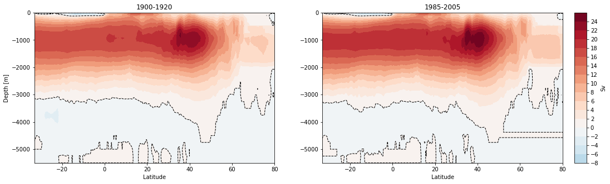
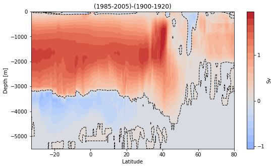
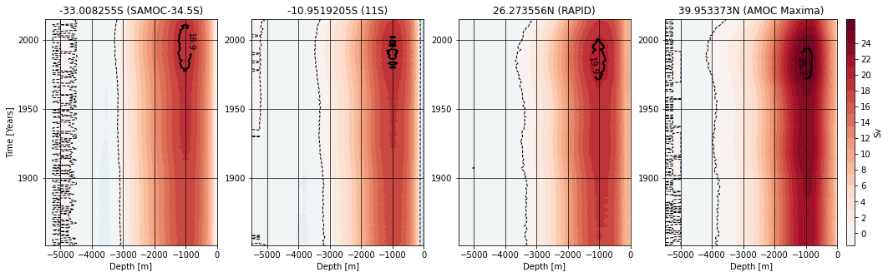
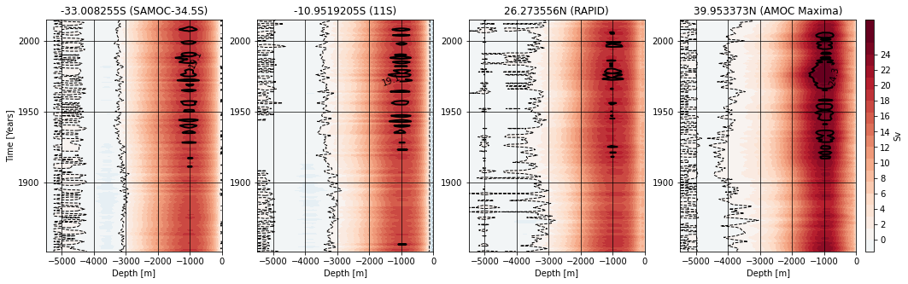
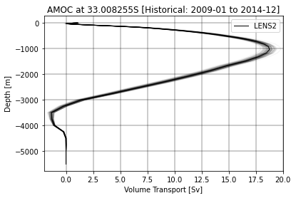
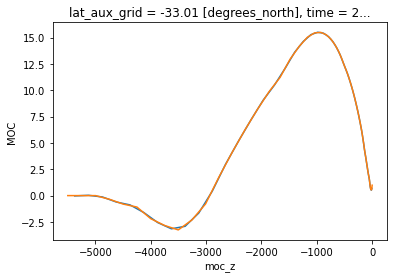
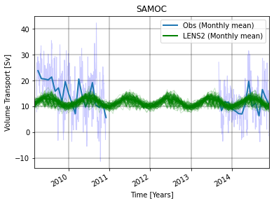
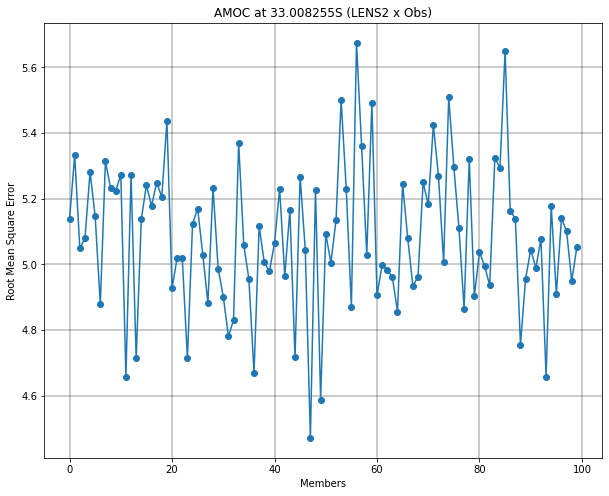

CESM2 - LARGE ENSEMBLE (LENS2)
Contents
CESM2 - LARGE ENSEMBLE (LENS2)#
by Mauricio Rocha and Dr. Gustavo Marques#
This Notebook aims to compute the MOC upper branch in the 34.5oS (SAMBAR) and compare the results with the observations. The upper branch is the integrated volume transport from the surface to the level where the meridional volume transport inverts.
Imports#
import xarray as xr
import pandas as pd
import numpy as np
import dask
import cf_xarray
import intake
import cftime
import nc_time_axis
import intake_esm
import matplotlib.pyplot as plt
import pop_tools
from dask.distributed import Client
from ncar_jobqueue import NCARCluster
import warnings, getpass, os
from mpl_toolkits.axes_grid1.inset_locator import inset_axes
from scipy.integrate import cumtrapz
from scipy import integrate
Dask#
mem_per_worker = 20 # memory per worker in GB
num_workers = 80 # number of workers
cluster = NCARCluster(cores=1, processes=3, memory=f'{mem_per_worker} GB',resource_spec=f'select=1:ncpus=6:mem={mem_per_worker}GB', walltime='6:00:00')
cluster.scale(num_workers)
client = Client(cluster)
print(client)
client
<Client: 'tcp://10.12.206.25:44647' processes=0 threads=0, memory=0 B>
Client
Client-de9357c5-4a97-11ed-a8de-3cecef1a5636
| Connection method: Cluster object | Cluster type: dask_jobqueue.PBSCluster |
| Dashboard: https://jupyterhub.hpc.ucar.edu/stable/user/mauricio/mrocha/proxy/8787/status |
Cluster Info
PBSCluster
834985a5
| Dashboard: https://jupyterhub.hpc.ucar.edu/stable/user/mauricio/mrocha/proxy/8787/status | Workers: 0 |
| Total threads: 0 | Total memory: 0 B |
Scheduler Info
Scheduler
Scheduler-6be0668b-c660-4942-aa2c-806185ffa101
| Comm: tcp://10.12.206.25:44647 | Workers: 0 |
| Dashboard: https://jupyterhub.hpc.ucar.edu/stable/user/mauricio/mrocha/proxy/8787/status | Total threads: 0 |
| Started: Just now | Total memory: 0 B |
Workers
Read in OGCM history file & MOC template file#
catalog = intake.open_esm_datastore(
'/glade/collections/cmip/catalog/intake-esm-datastore/catalogs/glade-cesm2-le.json'
)
/glade/u/home/mauricio/.local/lib/python3.8/site-packages/intake_esm/utils.py:96: DtypeWarning: Columns (5,6,9) have mixed types. Specify dtype option on import or set low_memory=False.
return pd.read_csv(catalog_path, **csv_kwargs), catalog_path
cat_subset = catalog.search(component='ocn',variable=['MOC'],frequency='month_1')
# Load catalog entries for subset into a dictionary of xarray datasets
dset_dict_raw = cat_subset.to_dataset_dict(zarr_kwargs={'consolidated': True}, storage_options={'anon': True})
print(f'\nDataset dictionary keys:\n {dset_dict_raw.keys()}')
--> The keys in the returned dictionary of datasets are constructed as follows:
'component.experiment.stream.forcing_variant.variable'
100.00% [4/4 00:27<00:00]
Dataset dictionary keys:
dict_keys(['ocn.historical.pop.h.smbb.MOC', 'ocn.ssp370.pop.h.cmip6.MOC', 'ocn.ssp370.pop.h.smbb.MOC', 'ocn.historical.pop.h.cmip6.MOC'])
%%time
fb=('cmip6','smbb')
for ifb in range(0,2):
print(f"Forcing_variant: {ifb}")
str=f'ds_{fb[ifb]}_moc = dset_dict_raw[\'ocn.historical.pop.h.{fb[ifb]}.MOC\']'
exec(str)
str=f'ds_{fb[ifb]}_moc = ds_{fb[ifb]}_moc.sel(time=slice(\'1850-01-01\', \'2014-12-31\'))' # Time Series
exec(str)
str=f'ds_{fb[ifb]}_moc = ds_{fb[ifb]}_moc.resample(time=\'1Y\', closed=\'left\').mean(\'time\')' # Yearly average
exec(str)
str=f'moc_{fb[ifb]} = ds_{fb[ifb]}_moc[\'MOC\']' # Variable
exec(str)
str=f'moc_{fb[ifb]}[\'moc_z\'] = -0.01*moc_{fb[ifb]}.moc_z' # +cm to -m
exec(str)
Forcing_variant: 0
Forcing_variant: 1
CPU times: user 9.55 s, sys: 46.8 ms, total: 9.59 s
Wall time: 9.78 s
Concatenate cmip6 and smbb into a single xarray#
ds_moc=xr.combine_nested([moc_cmip6,moc_smbb],concat_dim=['member_id']); del moc_cmip6, moc_smbb
Let’s take a look at the difference in MOC for different periods#
Z1 = ds_moc.isel(transport_reg=1).sel(time=slice('1900-01-01','1920-01-01')).mean(dim=['member_id','time']).sum(dim='moc_comp')
Z2 = ds_moc.isel(transport_reg=1).sel(time=slice('1985-01-01','2005-01-01')).mean(dim=['member_id','time']).sum(dim='moc_comp')
X, Y = np.meshgrid(ds_moc['lat_aux_grid'],ds_moc['moc_z'])
mn=-26
mx=26
fig, (ax1, ax2) = plt.subplots(1, 2, figsize=[17, 5])
im1 = ax1.contourf(X, Y, Z1, 20, vmin=mn, vmax=mx, cmap="RdBu_r")
axins = inset_axes(ax2,
width="5%", # width = 5% of parent_bbox width
height="100%", # height : 50%
loc='lower left',
bbox_to_anchor=(1.05, 0., 1, 1),
bbox_transform=ax2.transAxes,
borderpad=0,
)
im = ax2.contourf(X, Y, Z2, 20, vmin=mn, vmax=mx, cmap="RdBu_r")
fig.colorbar(im, cax=axins, ticks=range(mn, mx, 2),label='Sv')
ax1.contour(X, Y, Z1, levels = [0], colors=('k',), linestyles=('--',), linewidths=(1,))
ax2.contour(X, Y, Z2, levels = [0], colors=('k',), linestyles=('--',), linewidths=(1,))
ax1.set_title('1900-1920')
ax2.set_title('1985-2005')
ax1.set_xlabel('Latitude')
ax2.set_xlabel('Latitude')
ax1.set_ylabel('Depth [m]')
ax1.set_xlim(-33.008255,80)
ax2.set_xlim(-33.008255,80)
plt.show()

Note: Notice that we limited the southernmost latitude (33.008255S) so that we could use the mask that covers the Atlantic
# Plot of the difference
fig, (ax3) = plt.subplots(figsize=(9, 5))
cs1 = ax3.contourf(X, Y, abs(Z2)-abs(Z1), 20, vmin=-2, vmax=2, cmap="coolwarm")
ax3.contour(X, Y, abs(Z2)-abs(Z1), levels = [0], colors=('k',), linestyles=('--',), linewidths=(1,))
ax3.set_title('(1985-2005)-(1900-1920)')
ax3.set_xlabel('Latitude')
ax3.set_ylabel('Depth [m]')
ax3.set_xlim(-33.008255,80)
plt.colorbar(cs1,ticks=range(-2, 2),label='Sv')
plt.show()

Hovmoller Diagrams (depth x time) for different MOC monitoring sections#
%%time
# Compute a value to define a region of maximum in each section.
Z1 = ds_moc.isel(transport_reg=1,lat_aux_grid=87).mean(dim='member_id').sum(dim='moc_comp')
Z1_max=np.sort(np.max(Z1, axis=0).values)[-4] # I chose a region of maximum, selecting the fourth maximum value of all the years
print(round(Z1_max,1))
Z2 = ds_moc.isel(transport_reg=1,lat_aux_grid=146).mean(dim='member_id').sum(dim='moc_comp')
Z2_max=np.sort(np.max(Z2, axis=0).values)[-4]
print(round(Z2_max,1))
Z3 = ds_moc.isel(transport_reg=1,lat_aux_grid=274).mean(dim='member_id').sum(dim='moc_comp')
Z3_max=np.sort(np.max(Z3, axis=0).values)[-4]
print(round(Z3_max,1))
Z4 = ds_moc.isel(transport_reg=1,lat_aux_grid=300).mean(dim='member_id').sum(dim='moc_comp')
Z4_max=np.sort(np.max(Z4, axis=0).values)[-4]
print(round(Z4_max,1))
X, Y = np.meshgrid(ds_moc['moc_z'],ds_moc['time'])
18.9
19.1
19.9
25.7
CPU times: user 1min 50s, sys: 1.84 s, total: 1min 52s
Wall time: 2min 2s
%%time
# Plot
fig, (ax1, ax2, ax3, ax4) = plt.subplots(1, 4, figsize=[17, 5])
ax1.contourf(X, Y, Z1, 20, vmin=mn, vmax=mx, cmap="RdBu_r")
ax2.contourf(X, Y, Z2, 20, vmin=mn, vmax=mx, cmap="RdBu_r")
ax3.contourf(X, Y, Z3, 20, vmin=mn, vmax=mx, cmap="RdBu_r")
im = ax4.contourf(X, Y, Z4, 20, vmin=mn, vmax=mx, cmap="RdBu_r")
axins = inset_axes(ax4, width='5%', height='100%', loc='lower left', bbox_to_anchor=(1.05, 0., 1, 1), bbox_transform=ax4.transAxes, borderpad=0)
fig.colorbar(im, cax=axins, ticks=range(mn, mx, 2),label='Sv')
# Subplots
fmax=10
ax1.contour(X, Y, Z1, levels = [0], colors=('k',), linestyles=('--',), linewidths=(1,)); CS=ax1.contour(X, Y, Z1, levels = [18.9], colors=('k',), linestyles=('-',), linewidths=(2,))
ax1.clabel(CS, inline=True, fontsize=fmax); del CS
ax2.contour(X, Y, Z2, levels = [0], colors=('k',), linestyles=('--',), linewidths=(1,)); CS=ax2.contour(X, Y, Z2, levels = [19.1], colors=('k',), linestyles=('-',), linewidths=(2,))
ax2.clabel(CS, inline=True, fontsize=fmax); del CS
ax3.contour(X, Y, Z3, levels = [0], colors=('k',), linestyles=('--',), linewidths=(1,)); CS=ax3.contour(X, Y, Z3, levels = [19.9], colors=('k',), linestyles=('-',), linewidths=(2,))
ax3.clabel(CS, inline=True, fontsize=fmax); del CS
ax4.contour(X, Y, Z4, levels = [0], colors=('k',), linestyles=('--',), linewidths=(1,)); CS=ax4.contour(X, Y, Z4, levels = [25.7], colors=('k',), linestyles=('-',), linewidths=(2,))
ax4.clabel(CS, inline=True, fontsize=fmax); del CS
#Labels
ax1.set_title('-33.008255S (SAMOC-34.5S)'); ax2.set_title('-10.9519205S (11S)'); ax3.set_title('26.273556N (RAPID)'); ax4.set_title('39.953373N (AMOC Maxima)')
ax1.set_xlabel('Depth [m]'); ax2.set_xlabel('Depth [m]'); ax3.set_xlabel('Depth [m]'); ax4.set_xlabel('Depth [m]')
ax1.set_ylabel('Time [Years]')
ax1.grid(color='k', linestyle='-', linewidth=0.7); ax2.grid(color='k', linestyle='-', linewidth=0.7); ax3.grid(color='k', linestyle='-', linewidth=0.7); ax4.grid(color='k', linestyle='-', linewidth=0.7)
plt.show()

CPU times: user 5min 32s, sys: 5.74 s, total: 5min 38s
Wall time: 6min 7s
Note: From this figure it is clear that the recent weakening of the AMOC has a north-south direction. Would it be possible to determine the Lag between one latitude and another? Another exciting piece of information, the depth of the AMOC maximum does not seem to change over time; it stays at around 1000 meters at all latitudes, but the thickness of the upper branch changes. So when the MOC is stronger (weaker), the thickness of the upper branch is greater (less).
Let’s do the same plot as before for some members of the same experiment, so we can see if the conclusion holds also when we look at the internal variability#
%%time
# Compute a value to define a region of maximum in each section.
Z1 = ds_moc.isel(transport_reg=1,lat_aux_grid=87).sel(member_id='r20i1231p1f2').sum(dim='moc_comp')
Z1_max=np.sort(np.max(Z1, axis=0).values)[-7] # I chose a region of maximum, selecting the fourth maximum value of all the years
print(round(Z1_max,1))
Z2 = ds_moc.isel(transport_reg=1,lat_aux_grid=146).sel(member_id='r20i1231p1f2').sum(dim='moc_comp')
Z2_max=np.sort(np.max(Z2, axis=0).values)[-7]
print(round(Z2_max,1))
Z3 = ds_moc.isel(transport_reg=1,lat_aux_grid=274).sel(member_id='r20i1231p1f2').sum(dim='moc_comp')
Z3_max=np.sort(np.max(Z3, axis=0).values)[-7]
print(round(Z3_max,1))
Z4 = ds_moc.isel(transport_reg=1,lat_aux_grid=300).sel(member_id='r20i1231p1f2').sum(dim='moc_comp')
Z4_max=np.sort(np.max(Z4, axis=0).values)[-7]
print(round(Z4_max,1))
X, Y = np.meshgrid(ds_moc['moc_z'],ds_moc['time'])
19.1
19.1
20.2
24.3
CPU times: user 3.66 s, sys: 57.1 ms, total: 3.71 s
Wall time: 5.47 s
%%time
# Plot
fig, (ax1, ax2, ax3, ax4) = plt.subplots(1, 4, figsize=[17, 5])
ax1.contourf(X, Y, Z1, 20, vmin=mn, vmax=mx, cmap="RdBu_r")
ax2.contourf(X, Y, Z2, 20, vmin=mn, vmax=mx, cmap="RdBu_r")
ax3.contourf(X, Y, Z3, 20, vmin=mn, vmax=mx, cmap="RdBu_r")
im = ax4.contourf(X, Y, Z4, 20, vmin=mn, vmax=mx, cmap="RdBu_r")
axins = inset_axes(ax4, width='5%', height='100%', loc='lower left', bbox_to_anchor=(1.05, 0., 1, 1), bbox_transform=ax4.transAxes, borderpad=0)
fig.colorbar(im, cax=axins, ticks=range(mn, mx, 2),label='Sv')
# Subplots
fmax=10
ax1.contour(X, Y, Z1, levels = [0], colors=('k',), linestyles=('--',), linewidths=(1,)); CS=ax1.contour(X, Y, Z1, levels = [19.1], colors=('k',), linestyles=('-',), linewidths=(2,))
ax1.clabel(CS, inline=True, fontsize=fmax); del CS
ax2.contour(X, Y, Z2, levels = [0], colors=('k',), linestyles=('--',), linewidths=(1,)); CS=ax2.contour(X, Y, Z2, levels = [19.1], colors=('k',), linestyles=('-',), linewidths=(2,))
ax2.clabel(CS, inline=True, fontsize=fmax); del CS
ax3.contour(X, Y, Z3, levels = [0], colors=('k',), linestyles=('--',), linewidths=(1,)); CS=ax3.contour(X, Y, Z3, levels = [20.2], colors=('k',), linestyles=('-',), linewidths=(2,))
ax3.clabel(CS, inline=True, fontsize=fmax); del CS
ax4.contour(X, Y, Z4, levels = [0], colors=('k',), linestyles=('--',), linewidths=(1,)); CS=ax4.contour(X, Y, Z4, levels = [24.3], colors=('k',), linestyles=('-',), linewidths=(2,))
ax4.clabel(CS, inline=True, fontsize=fmax); del CS
#Labels
ax1.set_title('-33.008255S (SAMOC-34.5S)'); ax2.set_title('-10.9519205S (11S)'); ax3.set_title('26.273556N (RAPID)'); ax4.set_title('39.953373N (AMOC Maxima)')
ax1.set_xlabel('Depth [m]'); ax2.set_xlabel('Depth [m]'); ax3.set_xlabel('Depth [m]'); ax4.set_xlabel('Depth [m]')
ax1.set_ylabel('Time [Years]')
ax1.grid(color='k', linestyle='-', linewidth=0.7); ax2.grid(color='k', linestyle='-', linewidth=0.7); ax3.grid(color='k', linestyle='-', linewidth=0.7); ax4.grid(color='k', linestyle='-', linewidth=0.7)
plt.show()

CPU times: user 10.6 s, sys: 172 ms, total: 10.8 s
Wall time: 15 s
%%time
# Compute a value to define a region of maximum in each section.
Z1 = ds_moc.isel(transport_reg=1,lat_aux_grid=87).sel(member_id='r20i1231p1f2').sum(dim='moc_comp')
Z1_max=np.sort(np.max(Z1, axis=0).values)[-7] # I chose a region of maximum, selecting the fourth maximum value of all the years
print(round(Z1_max,1))
Z2 = ds_moc.isel(transport_reg=1,lat_aux_grid=146).sel(member_id='r20i1231p1f2').sum(dim='moc_comp')
Z2_max=np.sort(np.max(Z2, axis=0).values)[-7]
print(round(Z2_max,1))
Z3 = ds_moc.isel(transport_reg=1,lat_aux_grid=274).sel(member_id='r20i1231p1f2').sum(dim='moc_comp')
Z3_max=np.sort(np.max(Z3, axis=0).values)[-7]
print(round(Z3_max,1))
Z4 = ds_moc.isel(transport_reg=1,lat_aux_grid=300).sel(member_id='r20i1231p1f2').sum(dim='moc_comp')
Z4_max=np.sort(np.max(Z4, axis=0).values)[-7]
print(round(Z4_max,1))
X, Y = np.meshgrid(ds_moc['moc_z'],ds_moc['time'])
19.1
19.1
20.2
24.3
CPU times: user 3.58 s, sys: 46.9 ms, total: 3.63 s
Wall time: 4.98 s
%%time
# Plot
fig, (ax1, ax2, ax3, ax4) = plt.subplots(1, 4, figsize=[17, 5])
ax1.contourf(X, Y, Z1, 20, vmin=mn, vmax=mx, cmap="RdBu_r")
ax2.contourf(X, Y, Z2, 20, vmin=mn, vmax=mx, cmap="RdBu_r")
ax3.contourf(X, Y, Z3, 20, vmin=mn, vmax=mx, cmap="RdBu_r")
im = ax4.contourf(X, Y, Z4, 20, vmin=mn, vmax=mx, cmap="RdBu_r")
axins = inset_axes(ax4, width='5%', height='100%', loc='lower left', bbox_to_anchor=(1.05, 0., 1, 1), bbox_transform=ax4.transAxes, borderpad=0)
fig.colorbar(im, cax=axins, ticks=range(mn, mx, 2),label='Sv')
# Subplots
fmax=10
ax1.contour(X, Y, Z1, levels = [0], colors=('k',), linestyles=('--',), linewidths=(1,)); CS=ax1.contour(X, Y, Z1, levels = [19.1], colors=('k',), linestyles=('-',), linewidths=(2,))
ax1.clabel(CS, inline=True, fontsize=fmax); del CS
ax2.contour(X, Y, Z2, levels = [0], colors=('k',), linestyles=('--',), linewidths=(1,)); CS=ax2.contour(X, Y, Z2, levels = [19.1], colors=('k',), linestyles=('-',), linewidths=(2,))
ax2.clabel(CS, inline=True, fontsize=fmax); del CS
ax3.contour(X, Y, Z3, levels = [0], colors=('k',), linestyles=('--',), linewidths=(1,)); CS=ax3.contour(X, Y, Z3, levels = [20.2], colors=('k',), linestyles=('-',), linewidths=(2,))
ax3.clabel(CS, inline=True, fontsize=fmax); del CS
ax4.contour(X, Y, Z4, levels = [0], colors=('k',), linestyles=('--',), linewidths=(1,)); CS=ax4.contour(X, Y, Z4, levels = [24.3], colors=('k',), linestyles=('-',), linewidths=(2,))
ax4.clabel(CS, inline=True, fontsize=fmax); del CS
#Labels
ax1.set_title('-33.008255S (SAMOC-34.5S)'); ax2.set_title('-10.9519205S (11S)'); ax3.set_title('26.273556N (RAPID)'); ax4.set_title('39.953373N (AMOC Maxima)')
ax1.set_xlabel('Depth [m]'); ax2.set_xlabel('Depth [m]'); ax3.set_xlabel('Depth [m]'); ax4.set_xlabel('Depth [m]')
ax1.set_ylabel('Time [Years]')
ax1.grid(color='k', linestyle='-', linewidth=0.7); ax2.grid(color='k', linestyle='-', linewidth=0.7); ax3.grid(color='k', linestyle='-', linewidth=0.7); ax4.grid(color='k', linestyle='-', linewidth=0.7)
plt.show()
CPU times: user 10.7 s, sys: 171 ms, total: 10.9 s
Wall time: 15.1 s
del Z1, Z1_max, Z2, Z2_max, Z3, Z3_max, Z4, Z4_max, ax1, ax2, ax3, ax4, ds_moc
Let’s read the data again, as we need at least monthly series to compare with SAMOC (34.5S) which has daily series#
fb=('cmip6','smbb')
for ifb in range(0,2):
print(f"Forcing_variant: {ifb}")
str=f'ds_{fb[ifb]}_moc = dset_dict_raw[\'ocn.historical.pop.h.{fb[ifb]}.MOC\']'
exec(str)
str=f'ds_{fb[ifb]}_moc = ds_{fb[ifb]}_moc.sel(time=slice(\'2009-01-01\', \'2014-12-31\'))' # Time Series
exec(str)
str=f'ds_{fb[ifb]}_moc[\'moc_z\'] = -0.01*ds_{fb[ifb]}_moc[\'moc_z\']' # cm to m and negative depth
exec(str)
str=f'ds_{fb[ifb]}_moc[\'dz\'] = 0.01*ds_{fb[ifb]}_moc[\'dz\']' # cm to m and negative depth
exec(str)
Forcing_variant: 0
Forcing_variant: 1
ds_moc=xr.combine_nested([ds_cmip6_moc,ds_smbb_moc],concat_dim=['member_id']); del ds_cmip6_moc, ds_smbb_moc
What does the vertical profile of AMOC look like?#
ila=87
alpha=0.05
moc_mean=ds_moc.MOC.isel(transport_reg=1,lat_aux_grid=ila).sum(dim='moc_comp').mean(dim='time')
moc_mean.plot.line(y='moc_z',color='black',alpha=alpha,linewidth=1,add_legend=False)
moc_mean.mean(dim='member_id').plot.line(y='moc_z',color='black',linewidth=1,label='LENS2')
plt.xlabel("Volume Transport [Sv]")
plt.ylabel("Depth [m]")
plt.title('AMOC at 33.008255S [Historical: 2009-01 to 2014-12]')
plt.grid(color='k', linestyle='-', linewidth=0.4)
bbox_props = dict(boxstyle='round', fc='w', ec='0.5', alpha=0.9)
plt.xlim(-2, 20)
plt.legend()
plt.show()

ds_moc.coords['lat_aux_grid'][ila]
<xarray.DataArray 'lat_aux_grid' ()>
array(-33.008255, dtype=float32)
Coordinates:
lat_aux_grid float32 -33.01
Attributes:
long_name: latitude grid for transport diagnostics
units: degrees_north
valid_min: -79.48815
valid_max: 90.0del moc_mean
Interpolate to create AMOC data in the middle of the layer#
#cmip6
prof = np.empty((len(ds_moc['moc_z'])-1)) * np.nan
for t in range(0,len(ds_moc.coords['moc_z'])-1):
prof[t]=(ds_moc.coords['moc_z'][t]+ds_moc.coords['moc_z'][t+1])/2
ds_moc.MOC.interp(moc_z=prof,method='cubic').isel(member_id=0,time=0,transport_reg=1,lat_aux_grid=ila).sum(dim='moc_comp').plot()
ds_moc.MOC.isel(member_id=0,time=0,transport_reg=1,lat_aux_grid=ila).sum(dim='moc_comp').plot()
ds_moc_int=ds_moc.interp(moc_z=prof,method='cubic')

%%time
#LENS2
y_int = np.empty((len(ds_moc_int['member_id']),len(ds_moc_int['time']))) * np.nan
for it in range(0,len(ds_moc_int['time'])): # time
print(f'Time: {it}')
amoc = ds_moc_int.MOC.isel(time=it,transport_reg=1,lat_aux_grid=ila).sum(dim='moc_comp')
for im in range(0,len(ds_moc_int['member_id'])): # members (50 member in total)
#print(f'Member: {im}')
L = np.where(amoc.isel(member_id=im,moc_z=slice(46,61))<0) # Notes: 40=-1041.3682m; 60=-5499.9907m
if len(amoc['moc_z'][L])==0: # If there is no negative transport in this interval (moc_z=slice(46,61)), the integral is done from surface to bottom.
#y_int[it,im,ifb]=sum(amoc.isel(member_id=im,moc_z=slice(0,-1))*(amoc.isel(member_id=im)['moc_z'][0:-1].diff("moc_z")))/sum(amoc.isel(member_id=im)['moc_z'][0:-1].diff("moc_z"))
y_int[im,it]=sum(amoc.isel(member_id=im)*ds_moc.dz.isel(member_id=im).values)/sum(ds_moc.dz.isel(member_id=im).values)
else:
#y_int[it,im,ifb]=sum(amoc.isel(member_id=im,moc_z=slice(0,L[0][0]-1+46))*(amoc.isel(member_id=im)['moc_z'][0:L[0][0]-1+46].diff('moc_z')))/sum(amoc.isel(member_id=im)['moc_z'][0:L[0][0]-1+46].diff('moc_z'))
y_int[im,it]=sum(amoc.isel(member_id=im,moc_z=slice(0,L[0][0]-1+46))*ds_moc.dz.isel(member_id=im)[0:L[0][0]-1+46].values)/sum(ds_moc.dz.isel(member_id=im)[0:L[0][0]-1+46].values)
<timed exec>:2: RuntimeWarning: invalid value encountered in multiply
Time: 0
Time: 1
Time: 2
Time: 3
Time: 4
Time: 5
Time: 6
Time: 7
Time: 8
Time: 9
Time: 10
Time: 11
Time: 12
Time: 13
Time: 14
Time: 15
Time: 16
Time: 17
Time: 18
Time: 19
Time: 20
Time: 21
Time: 22
Time: 23
Time: 24
Time: 25
Time: 26
Time: 27
Time: 28
Time: 29
Time: 30
Time: 31
Time: 32
Time: 33
Time: 34
Time: 35
Time: 36
Time: 37
Time: 38
Time: 39
Time: 40
Time: 41
Time: 42
Time: 43
Time: 44
Time: 45
Time: 46
Time: 47
Time: 48
Time: 49
Time: 50
Time: 51
Time: 52
Time: 53
Time: 54
Time: 55
Time: 56
Time: 57
Time: 58
Time: 59
Time: 60
Time: 61
Time: 62
Time: 63
Time: 64
Time: 65
Time: 66
Time: 67
Time: 68
Time: 69
Time: 70
Time: 71
CPU times: user 1h 38min 37s, sys: 1min 14s, total: 1h 39min 51s
Wall time: 4h 1min 50s
ds_MOC_SAMOC = xr.Dataset({'MOC_SAMOC': (('member_id','time'), y_int)},coords={'member_id': ds_moc.coords['member_id'],'time': ds_moc.coords['time']})
ds_MOC_SAMOC.attrs['description'] = 'Meridional Overturning Circulation (MOC) upper branch from the surface to the level where the transport volume reverses sign for the period from 2009 to 2014'
ds_MOC_SAMOC.attrs['units'] = 'Sv'
ds_MOC_SAMOC.attrs['author'] = 'Mauricio Rocha'
ds_MOC_SAMOC.attrs['email'] = 'mauricio.rocha@usp.br'
ds_MOC_SAMOC['time'] = ds_MOC_SAMOC['time'].astype('datetime64[ns]')
# create a directory on scratch to save the output
path = '/glade/scratch/mauricio/LENS2_historical_south_atlantic/MOC_SAMOC/'.format(getpass.getuser())
os.system('mkdir -p '+path)
ds_MOC_SAMOC.to_netcdf(path+'MOC_SAMOC.nc')
import scipy.io
samoc_obs = scipy.io.loadmat('/glade/scratch/mauricio/SAMOC/Data/moc_sambar.mat')
samoc_moc = samoc_obs['moc'][:,0]
samoc_jd = samoc_obs['jd']-719529
timexr = pd.date_range("2009-03-18", periods=len(samoc_jd))
reference_time = pd.Timestamp("2009-03-17")
ds = xr.Dataset({'SAMOC': xr.DataArray(data=samoc_moc,dims=['time'],coords = {'time': timexr})})
ds_mean=ds.sel(time=slice('2009-03-18','2014-12-31')).resample(time='1M').mean('time')
ds_mean['time'] = ds_MOC_SAMOC['time'][2:]
ds.SAMOC.sel(time=slice('2009-03-18','2014-12-31')).plot.line(x='time',color='blue',alpha=0.2,linewidth=1,add_legend=False)
ds_mean.SAMOC.sel(time=slice('2009-03-18','2014-12-31')).plot.line(x='time',linewidth=2,label='Obs (Monthly mean)')
ds_MOC_SAMOC.MOC_SAMOC.sel(time=slice('2009-03-01','2014-12-01')).plot.line(x="time",color='green',alpha=0.2,linewidth=1,add_legend=False)
ds_MOC_SAMOC.MOC_SAMOC.sel(time=slice('2009-03-01','2014-12-01')).mean(dim='member_id').plot.line(x="time",color='green',linewidth=2,label='LENS2 (Monthly mean)')
plt.ylabel("Volume Transport [Sv]")
plt.xlabel("Time [Years]")
plt.title("SAMOC")
plt.grid(color='k', linestyle='-', linewidth=0.4)
plt.xlim(ds_mean['time'][0], ds_mean['time'][-1])
#plt.ylim(5,25)
plt.legend()
plt.show()
obs_mean=mean=np.nanmean(ds_mean.SAMOC.sel(time=slice('2009-03-18','2014-12-31')))
LENS2_mean=np.nanmean(ds_MOC_SAMOC.MOC_SAMOC.sel(time=slice('2009-03-01','2014-12-01')).mean(dim=['member_id']))
RMSE=((ds_MOC_SAMOC.MOC_SAMOC.sel(time=slice('2009-03-01','2014-12-01')).mean(dim=['member_id'])-ds_mean.SAMOC.sel(time=slice('2009-03-18','2014-12-31')))**2).mean()**0.5
print(f"Obs Mean: {np.round(obs_mean,1)}")
print(f"LENS2 Mean: {np.round(LENS2_mean,1)}")
print(f"RMSE: {np.round(RMSE,1)}")

Obs Mean: 13.4
LENS2 Mean: 11.6
RMSE: 4.9
Note: The figure above clearly shows that LENS2 produces a smoother AMOC than reality. The difference between the observation and the large ensemble in the SAMOC line was around 2Sv, similarly to that of Rodgers et al. (2021) for the RAPID section: https://esd.copernicus.org/articles/12/1393/2021/

Let’s compute the mean square error for each member and evaluate which member came closest to the observation (the smallest error)#
for im in range(0,len(ds_MOC_SAMOC['member_id'])): # members (50 member in total)
RMSE_=((ds_MOC_SAMOC.MOC_SAMOC.isel(member_id=im).sel(time=slice('2009-03-01','2014-12-01'))-ds_mean.SAMOC.sel(time=slice('2009-03-1','2014-12-31')))**2).mean()**0.5
#print(ds_MOC_SAMOC.MOC_SAMOC.coords['member_id'][im].values,f' RMSE: {np.round(RMSE,2)[im]}')
RMSE = np.empty((len(ds_MOC_SAMOC['member_id']))) * np.nan
for im in range(0,len(ds_MOC_SAMOC['member_id'])): # members (50 member in total)
RMSE[im]=((ds_MOC_SAMOC.MOC_SAMOC.isel(member_id=im).sel(time=slice('2009-03-01','2014-12-01'))-ds_mean.SAMOC.sel(time=slice('2009-03-18','2014-12-31')))**2).mean()**0.5
fig, ax = plt.subplots(figsize=(10, 8))
ax.plot(RMSE,'-o')
ax.set_ylabel("Root Mean Square Error")
ax.set_xlabel("Members")
ax.set_title("AMOC at 33.008255S (LENS2 x Obs)")
ax.grid(color='k', linestyle='-', linewidth=0.4)
plt.show
<function matplotlib.pyplot.show(close=None, block=None)>